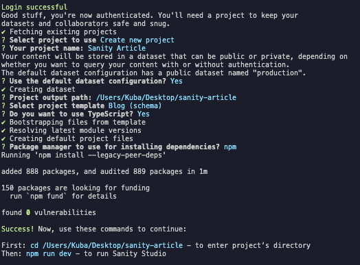

Introduction
Sanity.io is a powerful, flexible, and customizable headless content management system (CMS) that allows developers to build and manage content for their websites and applications. With a wide range of features, Sanity.io provides developers with the tools they need to create, store, and deliver content seamlessly across different platforms. In this blog post, we'll dive into the basics of Sanity.io, its key features, and how to get started with this popular headless CMS.
What is a Headless CMS?
A headless CMS is a content management system that separates the content layer from the presentation layer. This means that the content is stored and managed independently from the way it's displayed on your website or application. A headless CMS provides content through APIs, which can be consumed by various front-end technologies, such as React, Angular, or Vue.js.
Key Features of Sanity.io:
- Real-time Collaboration: Sanity.io allows multiple users to collaborate on content simultaneously, making it easy for teams to work together on projects.
- Customizable Content Models: Sanity.io lets you create custom content models, known as "schemas," to define the structure and relationships between different content types.
- Powerful Query Language: Sanity.io uses GROQ (Graph-Relational Object Queries), a versatile query language that enables you to fetch data with ease.
- Portable Text: Sanity.io's portable text format allows for rich text editing, which can be easily converted into various formats like HTML, Markdown, or plain text.
- Asset Management: Sanity.io provides built-in support for managing images, videos, and other media assets.
- Extensibility: With Sanity.io, you can extend the functionality of your CMS using plugins or by writing custom code.
Getting Started with Sanity.io:
To begin using Sanity.io, visit their website and click 'Get Started'. After creating an account, you'll be provided with a line of code that helps you download Sanity.io in your local environment (for this example, we're using macOS).
Run the following command in your terminal:
npm create sanity@latest
The command line will prompt you to log in using Google, GitHub, or email. In this case, we'll choose GitHub.
Next, you'll need to enter some metadata for your project. For this example, let's call the project 'blog'. Type 'y' (yes) for the default dataset configuration. Then, choose the path for your project. Afterward, open the project in your code editor (we'll use Visual Studio Code for this example).
Now, navigate to your project folder in Visual Studio Code, and run the following command in the terminal:
npm run dev
This command starts a local development server at localhost:3333. Open your browser and navigate to localhost:3333 to access the Sanity local development environment. Here, you can easily add content to your blog posts.
Fetching that data using Javascript and AWS
- Set up AWS CLI: Install the AWS Command Line Interface (CLI) on your computer by following the instructions at https://aws.amazon.com/cli/. Configure the AWS CLI with your AWS credentials using aws configure.
- Create a new folder: Create a new folder on your computer to store the Lambda function files.
- Write the Lambda function: Create a new file named index.js in the new folder and add the following code, replacing your_project_id, your_dataset, and your_api_version with the appropriate values:
- Install dependencies: In the same folder as your index.js file, run the following command to install the Sanity client library:
- Create a .zip file: Select all the files in the folder, right-click, and choose the option to create a new zip archive (e.g., "Compress" on macOS or "Send to > Compressed (zipped) folder" on Windows).
- Create an AWS Lambda function: In the AWS Management Console, navigate to the Lambda service. Click "Create function" and choose "Author from scratch." Enter a name for your function, and choose the "Node.js" runtime that corresponds to the version of Node.js you are using. Under "Function code," choose "Upload a .zip file" and select the zip file you created in step 6. Click "Create function."
- Configure Lambda function: In the "Function code" section of your Lambda function, set the "Handler" field to index.handler.
- Create an API Gateway: In the AWS Management Console, navigate to the API Gateway service. Click "Create API," choose "REST API," and click "Build." Choose "New API" and enter a name and description for your API. Click "Create API."
- Create a resource and method: In your API, click "Actions" and choose "Create Resource." Enter a name for the resource and click "Create Resource." Click "Actions" again, choose "Create Method," and select "GET." In the "GET" setup pane, choose "Lambda Function" for the "Integration type," select the "Use Lambda Proxy integration" checkbox, and enter the name of the Lambda function you created in step 7. Click "Save."
- Enable CORS: In your API, click "Actions" and choose "Enable CORS." Click "Enable CORS and replace existing CORS headers" in the dialog that appears. Click "Yes, replace existing values."
- Deploy API: In your API, click "Actions" and choose "Deploy API." Choose "[New Stage]" from the "Deployment stage" dropdown, enter a name for the new stage (e.g., "prod"), and click "Deploy." You will now see an "Invoke URL" at the top of the page.
- Use the API endpoint in your static site: Replace API_ENDPOINT with the "Invoke URL" from step 12 in the following code, and include it in your static site's JavaScript file:

npm init -y
npm install @sanity/client